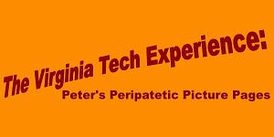
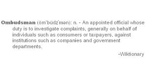

...or you can check out some recent updates. | ||
|  |
A collection of pictures from my random wanderings during my time at Virginia Tech. | |
|
See the trailer of this year's sure winner of the best documentary Oscar. Not really, but still: stop on by and see our little movie and be sure to check out the upcoming special features before you leave. | ||
|  |
Questions? Comments? Complaints? Check out our local impartial Ombudsman! | |
|
Coming this Spring! | ||
|
Various shorts have been created throughout the development of this website. Here they are. | ||
|
Still under heavy development, this page gives information about the building and is a source for bulk file transfer to its residents. | ||